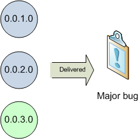
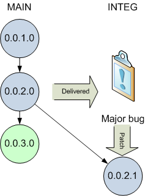
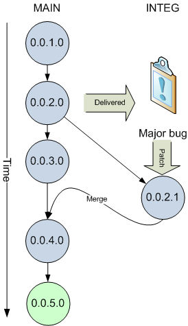
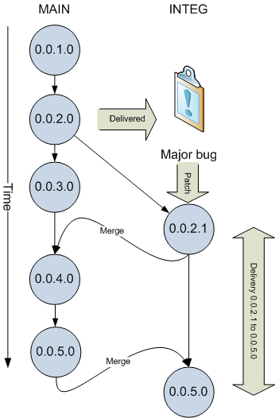

neXtep Designer gives you the control over the lifecycle of your database developments. But you are still responsible of how you want to manage this lifecycle depending on your organization. Here, we will browse a few common use-cases and suggest you different ways of managing your developments' versions.
The following is only suggestions of “best-practices” to allow you to anticipate the growth of your development teams.
Every version belongs to a branch. When you start to work with designer, you will work on the initial MAIN branch (also called the “root” versioning branch). You can see branches as isolation of the lifecycle of your application on a given environment. Therefore, as long as you only have one release to maintain, you will be fine with the initial MAIN branch.
As soon as you deliver your application to other environments or to other teams, you may need new branches because you may need to patch the delivered release while your are still developing the next release.
This is what branches do, they isolate flows of versions on specific environments.
If you are the only developer to work on a project, you have to keep in mind that you might have several versions to maintain :
The current production release
The currently tested release (the last you have delivered)
The current development release
If you start your project from scratch, you will start to develop on the first MAIN branch. As soon as you have finished your development, you will need to deliver it. After having delivered your new database, you will continue to implement new features for your application.
A few weeks after your delivery, the test team get back to you with a major bug which prevent them from testing the entire application. Problem is : your next delivery is in one week and your current developments cannot be delivered yet. You need to deliver an urgent patch of your previous delivery.

In order to patch the previously delivered release, the best way would be to create a parallel release of your delivered module in a dedicated branch. You will first need to create a new versioning view of the delivered 0.0.1.1 release on which you will make the patch. You will then commit your changes on a branch called “INTEG” (short for integration environment) which means the branch is dedicated to the integration deliveries.

You can then safely continue your work and will be able to patch your previously delivered developments, should you need to. But the most important thing is to integrate the patch you sent to the integration team into your current developments, without developing the same patch twice. With this way of doing things, you will be able to merge the “patch” release (0.0.2.1) with your current developments.

After having merged your patch with your current developments (release 0.0.4.0), you can go on with your developments (0.0.5.0). The way of managing your release is especially important when working with databases because your deliveries are incremental : one applies on another and “migrates” a given release to another one.
Now we consider that you have finished with your current developments and you want to deliver it to the integration team. You will be able to build a delivery for the integration platform by merging your developments back to the INTEG branch which now represents the integration “delivery” flow. Differencies between the previous release from this branch and your new release will make your new delivery delta, as shown in the following diagram :

We have seen the main process which is extensible indefinitely. When your developments are deployed on a production platform, you will need a production branch thus allowing you to deliver patch for this platform. Any of this patches will be merged to your development branch and integration branch and so on.
This is the main concept to understand. All other considerations are an extension of this root concept.